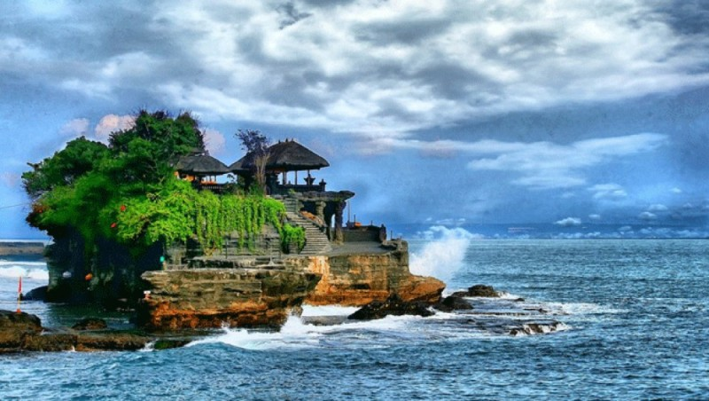
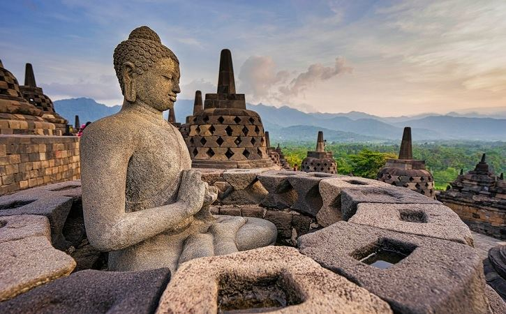
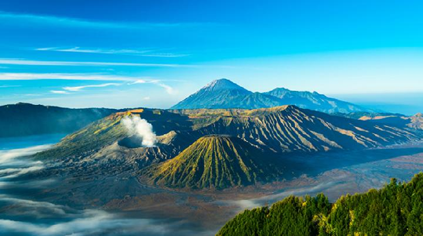

Tentang Kami
Selamat datang di website kami yang berisi informasi tentang tempat-tempat wisata indah yang dapat Anda kunjungi. Kami memiliki banyak destinasi wisata yang menarik untuk Anda jelajahi.
Destinasi Wisata Populer
Keindahan Bali
Bali adalah salah satu destinasi wisata paling populer di dunia.
Pulau ini terkenal dengan keindahan alamnya yang memukau, mulai dari pantai berpasir putih, air laut yang jernih, hingga pegunungan yang hijau.
Bali juga memiliki budaya yang kaya dan beragam, yang tercermin dalam arsitektur, seni, dan tari-tariannya.
Megahnya Candi Borobudur
Candi Borobudur adalah candi Buddha terbesar di dunia yang terletak di Magelang, Jawa Tengah. Candi ini dibangun pada abad ke-9 oleh Dinasti Syailendra dan merupakan salah satu situs warisan dunia UNESCO.
Borobudur dibangun dengan gaya Mandala, yang melambangkan alam semesta dalam ajaran Buddha. Candi ini terdiri dari sembilan tingkat, yang melambangkan sembilan tingkatan kehidupan manusia.
Borobudur adalah salah satu mahakarya arsitektur dunia yang menjadi bukti kebesaran peradaban Indonesia di masa lalu.
Tempat Wisata
| Destinasi | Lokasi | Deskripsi | Gambar |
|---|---|---|---|
| Gunung Bromo | Kabupaten Probolinggo | Gunung Bromo memiliki ketinggian 2.329 meter di atas permukaan laut. Gunung ini terletak di dalam kawasan Taman Nasional Bromo Tengger Semeru, yang juga merupakan rumah bagi beberapa gunung berapi lainnya, seperti Gunung Semeru, Gunung Batok, dan Gunung Kursi. |  |
| Pulau Komodo | Nusa Tenggara Timur | Pulau Komodo adalah sebuah pulau yang terletak di Kepulauan Nusa Tenggara, Indonesia. Pulau ini terkenal sebagai habitat asli komodo, kadal purba terbesar di dunia. Komodo adalah hewan karnivora yang dapat tumbuh hingga panjang 3 meter dan berat 165 kilogram. Komodo memiliki gigi yang tajam dan bisa berlari dengan kecepatan hingga 20 km/jam. |  |
| Raja Ampat | Papua Barat | Raja Ampat merupakan salah satu objek wisata Indonesia yang mendunia dan diakui Unesco. Keindahan pemandangan bawah lautnya menjadi daya tarik utama Pulau yang ada di ujung timur Indonesia ini. |  |